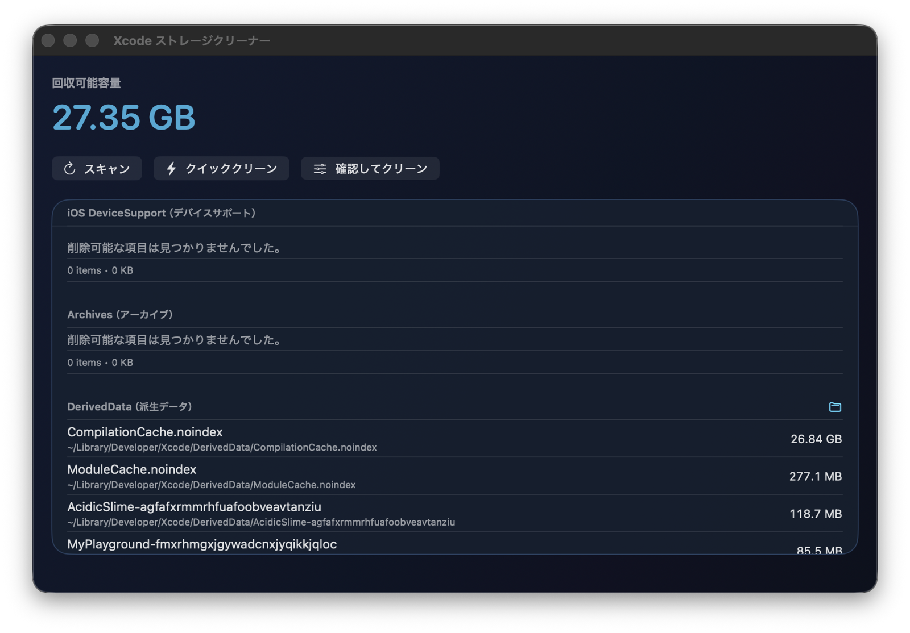
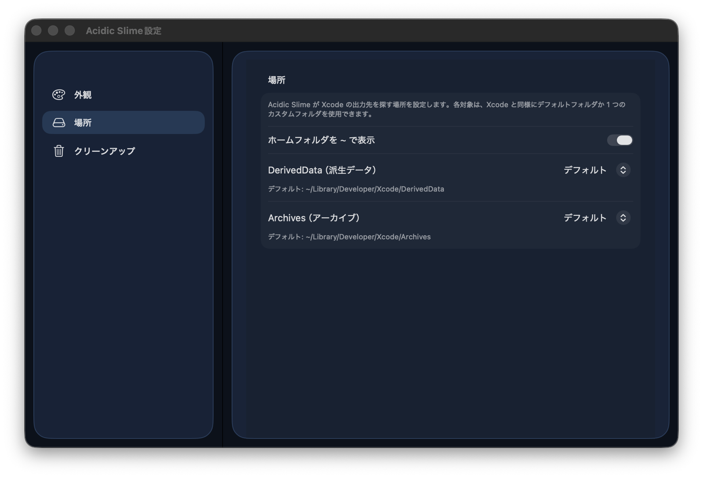

Fast storage scan
Check DerivedData, Archives, Device Support, logs, and other heavy directories in one view.
Overview
Check DerivedData, Archives, Device Support, logs, and other heavy directories in one view.
Use Quick Clean for speed or Review & Clean for item-level control.
Switch light and dark themes and configure default or custom folder locations.
Screenshots
See reclaimable space, run scans, and start cleanup from one calm interface.

Adjust appearance and folder locations to match your own Xcode workflow.
